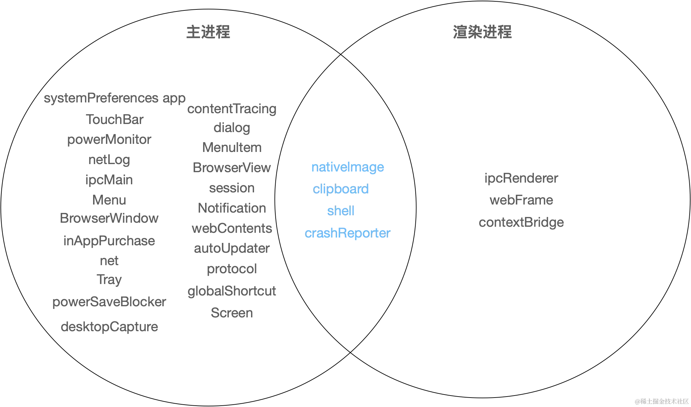

Electron 学习笔记
（想）学习 Electron 有一些目的：
- 把自己常用的一些操作 GUI 化，比如解析 excel，写书籍的爬虫之类的，打造一个个人的工具箱来提高生活质量
- 用它来写 Krita 的插件的 GUI（得找一个延时最低的进程通信方式，还得看这 GUI 会不会导致失焦等问题）
- 玩
学习参考 https://juejin.cn/book/7302990019642261567，先上手，看情况再深入。
概念
ELectron 是基于前端技术的，跨平台桌面开发框架，其允许在浏览器窗口中执行系统 API 以及使用 Node API。
Electron 是多进程的，它有一个主进程 Main Process 和多个派生自主进程的渲染进程 Renderer Process。主进程就像浏览器本身，渲染进程就像一个个标签页。
主进程活在 nodejs 的运行时下，管理应用的生命周期，负责创建窗口和进行原生 API 调用（如右键菜单，系统通知，剪切板等）。一个窗口对应一个渲染进程。
渲染进程（主要）活在浏览器的运行时下，负责展示窗口或者网页。为了安全性考虑，渲染进程只能访问部分本地 API。

预加载脚本执行在渲染进程中，网页加载前，但能够使用 node API，渲染进程 API 和 DOM API，也能通过 IPC 和主进程通信。在预加载脚本中能够暴露任意方法（包括 nodejs 的）到 window 上使得渲染进程能够使用它。
1 | |
1 | |
1 | |
通过 contextBridge 暴露的接口会有一定限制——预加载脚本和页面实际上不在同一个上下文中，而是通过 contextBridge 去代理去操作。调用 contextBridge 中的函数时，所有参数都会被复制一份再传递，返回值也会被复制，因此不可复制的信息会丢失。一个现象是node-fetch的返回值里将只有 size 和 timeout 字段，其他字段全都没了，因此处理响应体，header 等的逻辑得写在预加载脚本中。
但如果需要 fetch 能够跨源，只需要给窗口添加请求处理回调，置空响应中跨域相关 header 即可。
1 | |
注意 index.html 的 header 中需要替换原来的Content-Security-Policy（electrion-vite 创建的项目中自带的）为：
1 | |
或者在预加载脚本中
IPC
关于 IPC，IPC 即进程间通信，其有各种形式，包括共享内存，管道，本地套接字，signal，消息队列等，主进程和渲染进程之间通过 IPC 进行通信。
Electron 中有自己的 IPC 形式，其基于 EventEmitter，但因为需要跨进程通信，所以传输的参数会被序列化、反序列化，丢掉原型等信息，且函数，Promise 不能传递。
从渲染进程到主进程，需要使用 ipcRenderer的send, invoke 和 sendSync方法，主进程通过 ipcMain去接受消息并执行操作，以及回复（还能回复？？）。
三种方法有下面区别：
send：只管发送，不等响应立即返回，无法看到主进程的回复，主进程通过ipcMain.on接收消息，其中通过event.reply（或者event.sender.send）去做回复，回复需要指定 channel，回复的 channel 需要被渲染进程监听，使用ipcRenderer.on。invoke：Promise 风格，能够异步地返回主进程的回复，主进程通过ipcMain.handle去接受消息，通过 Promise 做回复。sendSync：同步发送，主进程通过ipcMain.on接收消息，通过设置event.returnValue做回复。同步发送只在无计可施的情况下才应当使用。
只展示 invoke，因为它是 Electron 官方文档中建议的方式：
1 | |
从主进程到渲染进程，第一种方式是被动地等待渲染进程的消息，通过回复去通信。
如果要主动地通知渲染进程，需要利用webContents，它是BrowserWindow的成员，因此使用它是极其方便的。渲染进程仍旧需要用ipcRenderer.on去监听消息。
1 | |
渲染进程到渲染进程间可以使用MessagePort实现，它类似消息队列，但是是双工的，主进程创建 MessagePort 得到两个 port，并使用webContents.postMessage把 port 发送给两个渲染进程，然后两个渲染进程便可使用 port 去通信（这玩意能序列化？？）。
感觉这样操作有点不合适……我仍旧倾向把整个应用程序的状态想象为一整个树状结构，渲染进程向渲染进程通信感觉就像树的兄弟节点去通信一样感觉对维护不利，但或许它本就不是一棵树吧。
上下文菜单，托盘
TODO
用例：Dragger
创建一个始终置顶的空页面，显示一个drag to here，右下角一个Setting，左下角一个History：
- 拖动文字、图片，文件等到其上时将之保存，或者在焦点在该页面上时按 Ctrl+V 时同样操作（需研究）
- 每次保存时，
drag to here文字替换为saved <图片|文字|文件> at <当前时间戳> - 点击
Setting和History均唤起新页面，前者就一个clear和exit，后者
这玩意做出来是想考虑一个能快速保存内容的方案——使用拖动而非拷贝的话能避免无效的拷贝内容和轮询剪切板中大图片文件的开销，拖动也允许快速“集成”其他应用；考虑下面的使用场景：
- 在设置中指定图片存储位置和存储文件名，使能够快速保存图片（通过用户配置的回调去实现）
- 窗口多开，每个窗口指定“Collection”，拖动的内容均存入相应 Collection 中，供用户快速组织某一主题需要的内容
TODO
Debug
https://www.electronjs.org/zh/docs/latest/tutorial/application-debugging
TODO 研究如何 debug 主进程和渲染进程。
本博客所有文章除特别声明外，均采用 CC BY-NC-SA 4.0 协议 ，转载请注明出处！